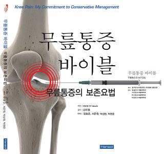
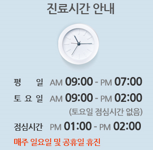
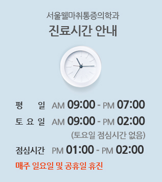
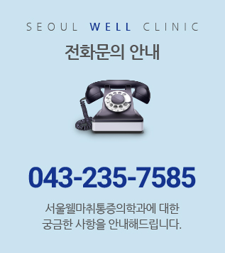

정확한 영상학적 진단과 숙련된 시술 경험으로 통증의 근본 원인을 안전하게 해결합니다

척추·관절 질환의 90% 이상은 수술 없이 보존적·비수술적 치료만으로도 충분히 호전될 수 있습니다. 수마취 통증의학과의원은 정확한 영상 진단과 세심한 이학적 검사를 바탕으로 꼭 필요한 치료만을 정직하게 시행합니다.
철저한 감염 관리와 독립된 치료 공간에서 편안하고 안전한 진료를 받으실 수 있습니다

DRGEM 최신 디지털 영상진단 장비와 C-arm을 통해 미세한 골격·척추 병변까지 정밀하게 진단합니다.

환자 개개인의 프라이버시를 존중하는 쾌적한 온열베드와 전문 물리·충격파 치료 장비를 갖추고 있습니다.

손목·손가락 관절염 및 수부 통증 완화를 위한 위생적인 개별 파라핀 베스(Paraffin Bath) 시스템을 운영합니다.



· 평 일 : AM 09:00 ~ PM 07:00
· 토 요 일 : AM 09:00 ~ PM 02:00 (점심시간 없음)
· 점심시간 : PM 01:00 ~ PM 02:00
· 매주 일요일 및 공휴일 휴진

